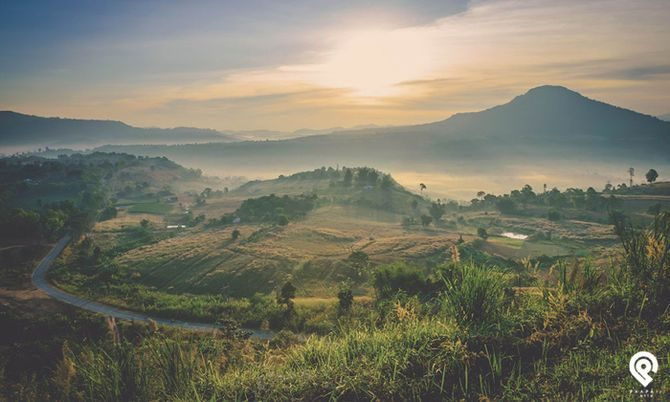
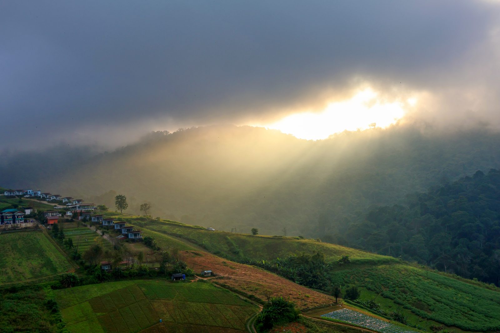
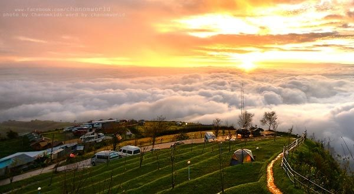
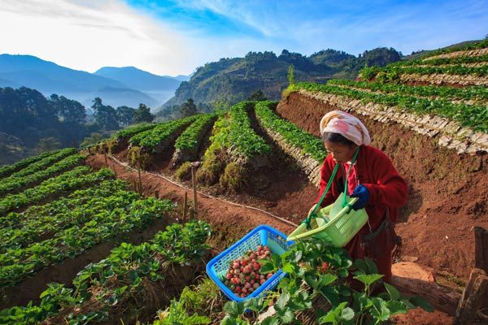

เพชรบูรณ์ — central Thailand highlands
The Switzerland
of Thailand
Ridgelines wrapped in cool mist, sunrise seas of fog over Phu Thap Boek, and valleys of strawberries where the mountains are the whole reason to come.

Featured this season
Where the mountains
show off
-

NATURAL — VIEWPOINT
Khao Kho
A national park of ridgeline roads, monuments and viewpoints strung across the cool highland air.
-

SUNRISE — SEA OF FOG
Phu Thap Boek
Arrive before dawn to watch the valley disappear beneath a slow-moving sea of cloud.
-

FOOD & LOCAL PRODUCTS
Strawberries & farm markets
Cool-climate strawberries, roadside stalls and small farms open for picking through the winter.
Overview
Why “the Switzerland of Thailand”
Phetchabun sits in a ring of mountains in Thailand's lower north — high enough that the air stays cool year-round and low clouds settle into the valleys most mornings. The nickname started with visitors comparing its ridgelines and pine-dotted highlands to the Alps, and it stuck.
About Phetchabun
- LOCATION Lower northern Thailand, roughly 350 km from Bangkok
- CLIMATE Cool highland air, especially November–February
- KNOWN FOR Mountain viewpoints, sea-of-fog sunrises, temple sites, strawberry farms
- GETTING THERE Car, bus or van from Bangkok — see route guide